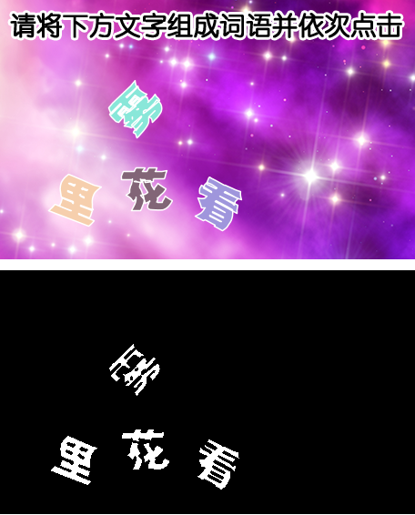

| 命令名称 | Filter_BlockChoose 色块选留 |
| 命令功能 | (针对彩色图像处理)指定大小的单色块进行保留 |
| 语法格式 | TURING.Filter_BlockChoose(iWidth, iHeight, fColor, bColor) |
| 参数说明 |
iWidth：整数型，指定色块宽度（不能与高同时小于2） iWidth：整数型，指定色块高度（不能与宽同时小于2） fColor：字符串型，设置前景色（默认BBGGRR白色"FFFFFF"，为空时保留颜色） bColor：字符串型，设置背景色（默认BBGGRR黑色"000000"） |
| 返回值 | 无 |
| 按键精灵 |
复制代码
'获取屏幕图像数据 Call TURING.Pixel_FromScreen(0, 0, 300, 200) '大小5*10色块选留 Call TURING.Filter_BlockChoose(5, 10) '显示图像预览（会阻塞） Call TURING.Pixel_Preview() |
| 滤镜效果 |  |